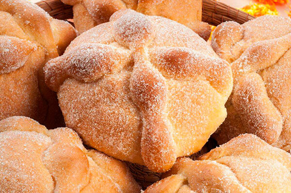
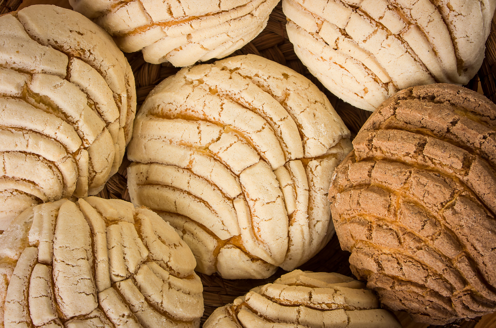

Pan rustico

Pan elaborado con masa madre y procesos de fermentación lentos. Su miga es suave y esponjosa, con alveolos grandes, y su corteza es crujiente y dorada.
Pan de muerto
Pan dulce mexicano típico del Día de Muertos.
Conchas dulces
Pan con corteza dulce, puede estar rellana o no.